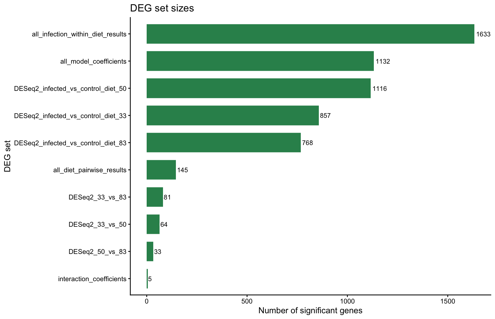
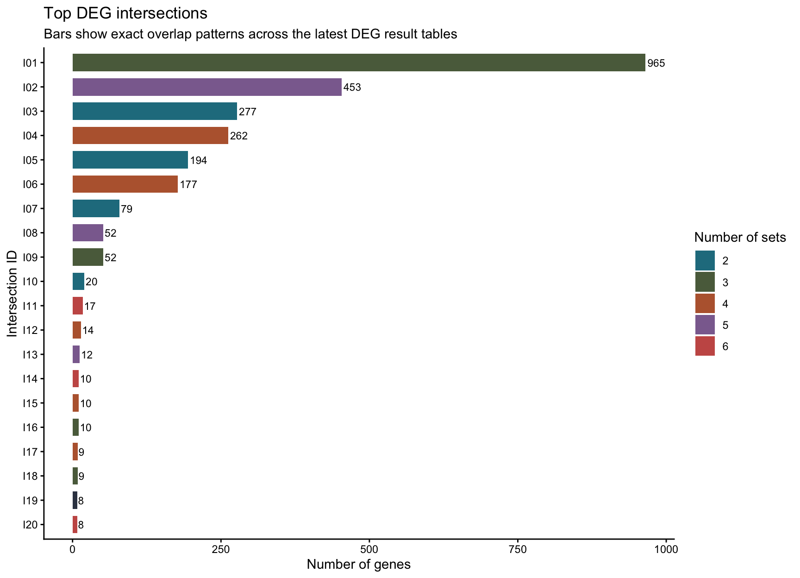
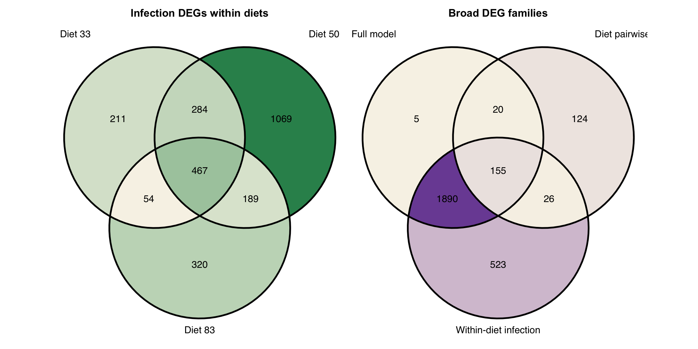
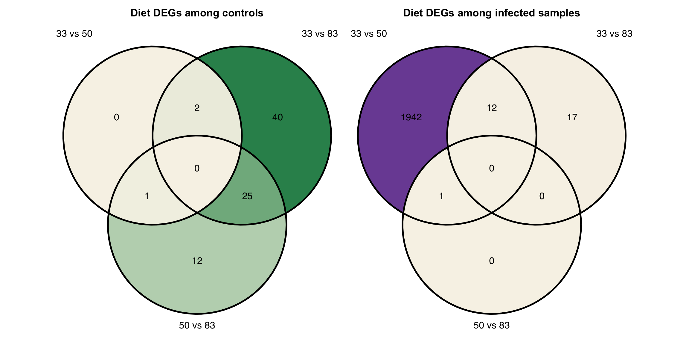
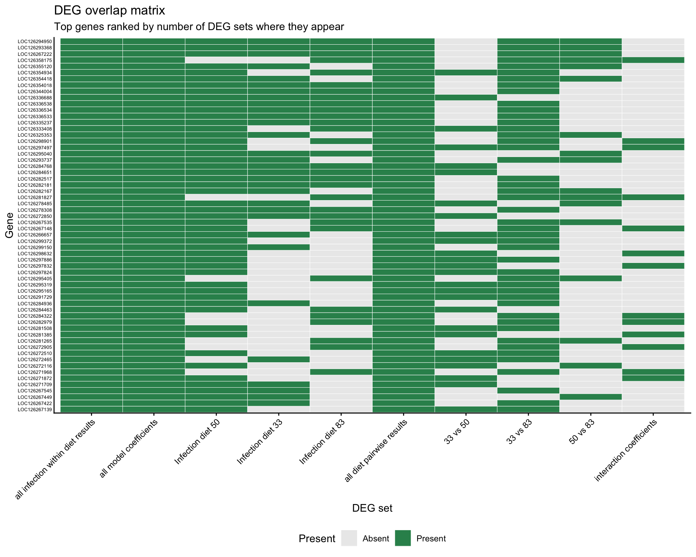
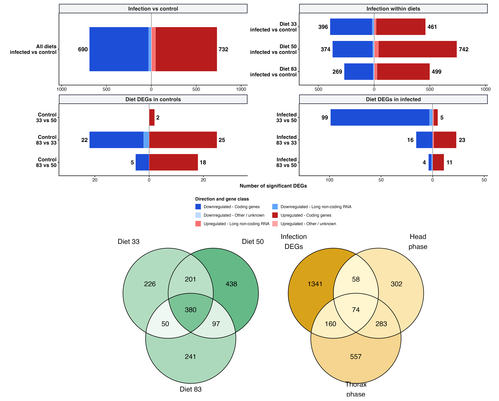

Main-chromosome DEG overlap and prioritization
Emily Baker and Maeva A. Techer
2026-08-06
Last updated: 2026-08-06
Checks: 6 1
Knit directory:
gregaria-diet-infection-interaction/
This reproducible R Markdown analysis was created with workflowr (version 1.7.2). The Checks tab describes the reproducibility checks that were applied when the results were created. The Past versions tab lists the development history.
The R Markdown file has unstaged changes. To know which version of
the R Markdown file created these results, you’ll want to first commit
it to the Git repo. If you’re still working on the analysis, you can
ignore this warning. When you’re finished, you can run
wflow_publish to commit the R Markdown file and build the
HTML.
Great job! The global environment was empty. Objects defined in the global environment can affect the analysis in your R Markdown file in unknown ways. For reproduciblity it’s best to always run the code in an empty environment.
The command set.seed(20260427) was run prior to running
the code in the R Markdown file. Setting a seed ensures that any results
that rely on randomness, e.g. subsampling or permutations, are
reproducible.
Great job! Recording the operating system, R version, and package versions is critical for reproducibility.
Nice! There were no cached chunks for this analysis, so you can be confident that you successfully produced the results during this run.
Great job! Using relative paths to the files within your workflowr project makes it easier to run your code on other machines.
Great! You are using Git for version control. Tracking code development and connecting the code version to the results is critical for reproducibility.
The results in this page were generated with repository version 5ebe940. See the Past versions tab to see a history of the changes made to the R Markdown and HTML files.
Note that you need to be careful to ensure that all relevant files for
the analysis have been committed to Git prior to generating the results
(you can use wflow_publish or
wflow_git_commit). workflowr only checks the R Markdown
file, but you know if there are other scripts or data files that it
depends on. Below is the status of the Git repository when the results
were generated:
Ignored files:
Ignored: .DS_Store
Ignored: analysis/output/
Ignored: code/R_timecourse_reference/
Ignored: code/scripts/__pycache__/
Ignored: data/raw_read_counts/DESeq2_output/overlap_DEGs/
Ignored: data/reference/
Ignored: output/.DS_Store
Ignored: output/rmd_runs/
Ignored: output/runs/
Ignored: scripts/.RData
Ignored: scripts/.Rhistory
Untracked files:
Untracked: output/archive/rmd_runs_20260806/placed-unplaced-scaffold-analysis_20260804-152445/placed_unplaced_all_deseq2_results.csv
Untracked: output/archive/site_build_artifacts_20260806/28-placed-unplaced-scaffold-analysis_cache/html/run-deseq2_a47470e453bd1a12bb9fca9d052eda43.rdb
Unstaged changes:
Modified: analysis/01-study-design-data.Rmd
Modified: analysis/02-workflow-reproducibility.Rmd
Modified: analysis/03-count-qc-exploration.Rmd
Modified: analysis/04-deseq2-interaction-model.Rmd
Modified: analysis/05-diet-pairwise-deg.Rmd
Modified: analysis/06-infection-within-diet-deg.Rmd
Modified: analysis/07-deg-overlap-prioritization.Rmd
Modified: analysis/08-publication-figures.Rmd
Modified: analysis/10-go-term-enrichment.Rmd
Modified: analysis/11-outlier-sensitivity.Rmd
Modified: analysis/13-physiology-candidate-genes.Rmd
Modified: analysis/14-all-samples-deseq2-interaction-model.Rmd
Modified: analysis/15-all-samples-diet-pairwise-deg.Rmd
Modified: analysis/16-all-samples-infection-within-diet-deg.Rmd
Modified: analysis/24-all-deg-catalogue.Rmd
Modified: analysis/25-enrichment-term-gene-index.Rmd
Modified: analysis/26-circled-cluster-enrichment.Rmd
Modified: analysis/27-scaffold-origin-audit.Rmd
Modified: analysis/28-placed-unplaced-scaffold-analysis.Rmd
Modified: analysis/29-metarhizium-read-burden.Rmd
Modified: analysis/30-curated-target-gene-figure.Rmd
Modified: analysis/31-all-scaffolds-deg-overlap-prioritization.Rmd
Modified: analysis/32-all-scaffolds-deg-catalogue.Rmd
Modified: analysis/33-all-scaffolds-go-term-enrichment.Rmd
Modified: analysis/34-all-scaffolds-enrichment-term-gene-index.Rmd
Modified: analysis/_site.yml
Modified: analysis/index.Rmd
Modified: analysis/site-style.css
Modified: code/HOST_PATHOGEN_DUAL_RNASEQ.md
Modified: code/cluster.json
Modified: code/pilot/check_host_pathogen_dual_progress.sh
Modified: code/rules/07_host_pathogen_dual_rnaseq.smk
Note that any generated files, e.g. HTML, png, CSS, etc., are not included in this status report because it is ok for generated content to have uncommitted changes.
These are the previous versions of the repository in which changes were
made to the R Markdown
(analysis/07-deg-overlap-prioritization.Rmd) and HTML
(docs/07-deg-overlap-prioritization.html) files. If you’ve
configured a remote Git repository (see ?wflow_git_remote),
click on the hyperlinks in the table below to view the files as they
were in that past version.
| File | Version | Author | Date | Message |
|---|---|---|---|---|
| Rmd | 5ebe940 | Maeva TECHER | 2026-08-06 | changes analysis |
| html | 5ebe940 | Maeva TECHER | 2026-08-06 | changes analysis |
| html | 1b24ec2 | Maeva TECHER | 2026-07-16 | adding phase related changes |
| Rmd | bceb79b | Maeva TECHER | 2026-07-04 | update outliers removal |
| html | bceb79b | Maeva TECHER | 2026-07-04 | update outliers removal |
| html | fb64139 | Maeva TECHER | 2026-07-03 | fixed the repo broken link |
| Rmd | 4de8698 | Maeva TECHER | 2026-07-03 | update html |
| html | 4de8698 | Maeva TECHER | 2026-07-03 | update html |
| Rmd | 4ef2181 | Maeva TECHER | 2026-07-03 | Upgrading analysis and figures DEGs |
| html | 4ef2181 | Maeva TECHER | 2026-07-03 | Upgrading analysis and figures DEGs |
Purpose
Step 1 - Build DEG sets
Collect exact contrast-level chromosome-only gene lists.
Step 2 - Measure overlap
Use Venn, UpSet, and presence-absence summaries to show shared calls.
Step 3 - Prioritize genes
Trace recurrent genes back to the contrasts in which they are significant.
This page compares significant main-chromosome DEG lists from the all-samples model pages. It also runs the small condition-specific diet contrasts needed for targeted Venn diagrams: diet-to-diet DEGs among control samples and diet-to-diet DEGs among infected samples.
The goal is to ask whether the same genes repeatedly appear across diet contrasts, infection contrasts, and model coefficients. Genes that recur across analyses can be useful candidates for follow-up because they are less dependent on a single contrast definition.
Setup
The page reads DEG result files from the timestamped run folders produced by the analysis pages. This keeps the overlap step reproducible while avoiding hidden helper scripts: the thresholds used to define a DEG remain visible in the YAML header.
knitr::opts_chunk$set(message = FALSE, warning = FALSE)
required <- c("DESeq2", "ggplot2", "UpSetR", "ggVennDiagram", "readr", "dplyr")
missing <- required[!vapply(required, requireNamespace, logical(1), quietly = TRUE)]
if (length(missing) > 0) {
stop("Install required packages before knitting: ", paste(missing, collapse = ", "))
}
library(ggplot2)
diet_colors <- c("33" = "#E6862E", "50" = "#2F8F5B", "83" = "#7B4FA3")
overlap_colors <- c("Present" = "#2F8F5B", "Absent" = "grey92")
bar_color <- "#2F8F5B"
project_dir <- normalizePath(".", mustWork = TRUE)
run_stamp <- format(Sys.time(), "%Y%m%d-%H%M%S")
out_dir <- file.path(project_dir, "output", "rmd_runs",
paste(params$output_tag, run_stamp, sep = "_"))
dir.create(out_dir, recursive = TRUE, showWarnings = FALSE)
results_root <- file.path(project_dir, params$results_root)
latest_dir <- function(pattern) {
dirs <- list.dirs(results_root, recursive = FALSE, full.names = TRUE)
dirs <- dirs[grepl(pattern, basename(dirs))]
if (length(dirs) == 0) stop("No run folder matched: ", pattern)
dirs[which.max(file.info(dirs)$mtime)]
}Find result files
Only CSV files that look like DESeq2 result tables are selected. The table below is shown so the reader can see exactly which run outputs contributed to the overlap analysis.
current_run_dirs <- c(
latest_dir("^main-chromosome-all-samples-deseq2-interaction-model_"),
latest_dir("^main-chromosome-all-samples-diet-pairwise-deg_All_"),
latest_dir("^main-chromosome-all-samples-infection-within-diet-deg_")
)
all_result_files <- unlist(lapply(
current_run_dirs,
list.files,
pattern = "\\.csv$",
full.names = TRUE
))
all_result_files <- all_result_files[grepl(
"DESeq2_|all_.*results|coefficients",
basename(all_result_files)
)]
file_info <- data.frame(
file = all_result_files,
short_name = basename(all_result_files),
modified = file.info(all_result_files)$mtime,
stringsAsFactors = FALSE
)
file_info <- file_info[order(file_info$short_name,
-as.numeric(file_info$modified)), ]
# Keep the newest run for each result table so old workflowR runs do not
# duplicate the same contrast many times in the overlap figures.
file_info <- file_info[!duplicated(file_info$short_name), ]
result_files <- file_info$file
file_table <- data.frame(
file = result_files,
short_name = basename(result_files),
modified = file.info(result_files)$mtime
)
knitr::kable(file_table)| file | short_name | modified |
|---|---|---|
| /Users/maevatecher/Documents/GitHub/gregaria-diet-infection-interaction/output/rmd_runs/main-chromosome-all-samples-diet-pairwise-deg_All_20260806-005558/all_diet_pairwise_results.csv | all_diet_pairwise_results.csv | 2026-08-06 00:56:07 |
| /Users/maevatecher/Documents/GitHub/gregaria-diet-infection-interaction/output/rmd_runs/main-chromosome-all-samples-infection-within-diet-deg_20260806-005612/all_infection_within_diet_results.csv | all_infection_within_diet_results.csv | 2026-08-06 00:56:22 |
| /Users/maevatecher/Documents/GitHub/gregaria-diet-infection-interaction/output/rmd_runs/main-chromosome-all-samples-deseq2-interaction-model_20260806-005545/all_model_coefficients.csv | all_model_coefficients.csv | 2026-08-06 00:55:53 |
| /Users/maevatecher/Documents/GitHub/gregaria-diet-infection-interaction/output/rmd_runs/main-chromosome-all-samples-diet-pairwise-deg_All_20260806-005558/DESeq2_33_vs_50.csv | DESeq2_33_vs_50.csv | 2026-08-06 00:56:05 |
| /Users/maevatecher/Documents/GitHub/gregaria-diet-infection-interaction/output/rmd_runs/main-chromosome-all-samples-diet-pairwise-deg_All_20260806-005558/DESeq2_33_vs_83.csv | DESeq2_33_vs_83.csv | 2026-08-06 00:56:06 |
| /Users/maevatecher/Documents/GitHub/gregaria-diet-infection-interaction/output/rmd_runs/main-chromosome-all-samples-diet-pairwise-deg_All_20260806-005558/DESeq2_50_vs_83.csv | DESeq2_50_vs_83.csv | 2026-08-06 00:56:06 |
| /Users/maevatecher/Documents/GitHub/gregaria-diet-infection-interaction/output/rmd_runs/main-chromosome-all-samples-infection-within-diet-deg_20260806-005612/DESeq2_infected_vs_control_diet_33.csv | DESeq2_infected_vs_control_diet_33.csv | 2026-08-06 00:56:21 |
| /Users/maevatecher/Documents/GitHub/gregaria-diet-infection-interaction/output/rmd_runs/main-chromosome-all-samples-infection-within-diet-deg_20260806-005612/DESeq2_infected_vs_control_diet_50.csv | DESeq2_infected_vs_control_diet_50.csv | 2026-08-06 00:56:21 |
| /Users/maevatecher/Documents/GitHub/gregaria-diet-infection-interaction/output/rmd_runs/main-chromosome-all-samples-infection-within-diet-deg_20260806-005612/DESeq2_infected_vs_control_diet_83.csv | DESeq2_infected_vs_control_diet_83.csv | 2026-08-06 00:56:22 |
| /Users/maevatecher/Documents/GitHub/gregaria-diet-infection-interaction/output/rmd_runs/main-chromosome-all-samples-deseq2-interaction-model_20260806-005545/interaction_coefficients.csv | interaction_coefficients.csv | 2026-08-06 00:55:54 |
Build DEG sets
Each result table is converted into a set of significant gene IDs. If
a table already contains a significant column, that column
is used directly; otherwise the page reconstructs the DEG call from
adjusted p-value and log2 fold-change. This lets the overlap page work
with both the current self-contained Rmd outputs and older result
tables.
read_deg_set <- function(path) {
tab <- read.csv(path, check.names = FALSE)
gene_col <- intersect(c("gene_id", "gene", "GeneID"), names(tab))[1]
if (is.na(gene_col)) return(NULL)
if ("significant" %in% names(tab)) {
sig <- tab$significant
} else if (all(c("padj", "log2FoldChange") %in% names(tab))) {
sig <- !is.na(tab$padj) &
tab$padj < params$alpha &
abs(tab$log2FoldChange) >= params$lfc_threshold
} else {
return(NULL)
}
unique(as.character(tab[[gene_col]][sig]))
}
deg_sets <- lapply(result_files, read_deg_set)
names(deg_sets) <- tools::file_path_sans_ext(basename(result_files))
deg_sets <- deg_sets[lengths(deg_sets) > 0]
set_summary <- data.frame(
set = names(deg_sets),
n_genes = lengths(deg_sets),
stringsAsFactors = FALSE
)
set_summary <- set_summary[order(set_summary$n_genes, decreasing = TRUE), ]
deg_sets <- deg_sets[set_summary$set]
knitr::kable(set_summary)| set | n_genes | |
|---|---|---|
| all_infection_within_diet_results | all_infection_within_diet_results | 2594 |
| all_model_coefficients | all_model_coefficients | 2070 |
| DESeq2_infected_vs_control_diet_50 | DESeq2_infected_vs_control_diet_50 | 2009 |
| DESeq2_infected_vs_control_diet_83 | DESeq2_infected_vs_control_diet_83 | 1030 |
| DESeq2_infected_vs_control_diet_33 | DESeq2_infected_vs_control_diet_33 | 1016 |
| all_diet_pairwise_results | all_diet_pairwise_results | 325 |
| DESeq2_33_vs_50 | DESeq2_33_vs_50 | 215 |
| DESeq2_33_vs_83 | DESeq2_33_vs_83 | 124 |
| interaction_coefficients | interaction_coefficients | 58 |
| DESeq2_50_vs_83 | DESeq2_50_vs_83 | 51 |
write.csv(set_summary, file.path(out_dir, "deg_set_summary.csv"),
row.names = FALSE)DEG set size plot
This first figure is the fastest way to see which contrasts are driving most of the DEG signal. It counts each DEG set independently, before asking whether genes overlap between sets.
set_summary$set <- factor(set_summary$set, levels = rev(set_summary$set))
p_set_size <- ggplot(set_summary, aes(x = set, y = n_genes)) +
geom_col(fill = bar_color, width = 0.72) +
geom_text(aes(label = n_genes), hjust = -0.12, size = 3) +
coord_flip() +
theme_classic() +
labs(
title = "DEG set sizes",
x = "DEG set",
y = "Number of significant genes"
)
p_set_size
ggsave(file.path(out_dir, "deg_set_size_barplot.png"),
p_set_size, width = 9, height = 5.8, dpi = 300)Presence-absence matrix
The presence-absence matrix records whether each DEG appears in each result set. The priority table then lists genes that occur in two or more sets, which is a practical starting point for annotation, enrichment, and candidate-gene figures.
if (length(deg_sets) == 0) {
stop("No DEG sets found. Knit the DESeq2 pages first, then rerun this page.")
}
all_genes <- sort(unique(unlist(deg_sets)))
presence <- sapply(deg_sets, function(x) all_genes %in% x)
presence_df <- data.frame(gene_id = all_genes, presence, check.names = FALSE)
write.csv(presence_df, file.path(out_dir, "deg_presence_absence_matrix.csv"),
row.names = FALSE)
overlap_count <- rowSums(presence)
names(overlap_count) <- all_genes
priority_genes <- data.frame(
gene_id = all_genes[overlap_count >= 2],
n_sets = overlap_count[overlap_count >= 2],
set_members = apply(presence[overlap_count >= 2, , drop = FALSE], 1,
function(x) paste(names(deg_sets)[x], collapse = "; ")),
stringsAsFactors = FALSE
)
priority_genes <- priority_genes[order(priority_genes$n_sets, decreasing = TRUE), ]
knitr::kable(head(priority_genes, 25))| gene_id | n_sets | set_members | |
|---|---|---|---|
| LOC126278485 | LOC126278485 | 8 | all_infection_within_diet_results; all_model_coefficients; DESeq2_infected_vs_control_diet_50; DESeq2_infected_vs_control_diet_83; DESeq2_infected_vs_control_diet_33; all_diet_pairwise_results; DESeq2_33_vs_50; DESeq2_50_vs_83 |
| LOC126293368 | LOC126293368 | 8 | all_infection_within_diet_results; all_model_coefficients; DESeq2_infected_vs_control_diet_50; DESeq2_infected_vs_control_diet_83; DESeq2_infected_vs_control_diet_33; all_diet_pairwise_results; DESeq2_33_vs_83; DESeq2_50_vs_83 |
| LOC126294950 | LOC126294950 | 8 | all_infection_within_diet_results; all_model_coefficients; DESeq2_infected_vs_control_diet_50; DESeq2_infected_vs_control_diet_83; DESeq2_infected_vs_control_diet_33; all_diet_pairwise_results; DESeq2_33_vs_83; DESeq2_50_vs_83 |
| LOC126267148 | LOC126267148 | 7 | all_infection_within_diet_results; all_model_coefficients; DESeq2_infected_vs_control_diet_50; DESeq2_infected_vs_control_diet_83; all_diet_pairwise_results; DESeq2_33_vs_83; interaction_coefficients |
| LOC126267222 | LOC126267222 | 7 | all_infection_within_diet_results; all_model_coefficients; DESeq2_infected_vs_control_diet_50; DESeq2_infected_vs_control_diet_83; DESeq2_infected_vs_control_diet_33; all_diet_pairwise_results; DESeq2_50_vs_83 |
| LOC126267535 | LOC126267535 | 7 | all_infection_within_diet_results; all_model_coefficients; DESeq2_infected_vs_control_diet_50; DESeq2_infected_vs_control_diet_83; all_diet_pairwise_results; DESeq2_33_vs_83; DESeq2_50_vs_83 |
| LOC126267545 | LOC126267545 | 7 | all_infection_within_diet_results; all_model_coefficients; DESeq2_infected_vs_control_diet_50; DESeq2_infected_vs_control_diet_33; all_diet_pairwise_results; DESeq2_33_vs_83; interaction_coefficients |
| LOC126272850 | LOC126272850 | 7 | all_infection_within_diet_results; all_model_coefficients; DESeq2_infected_vs_control_diet_50; DESeq2_infected_vs_control_diet_83; DESeq2_infected_vs_control_diet_33; all_diet_pairwise_results; DESeq2_33_vs_50 |
| LOC126278308 | LOC126278308 | 7 | all_infection_within_diet_results; all_model_coefficients; DESeq2_infected_vs_control_diet_50; DESeq2_infected_vs_control_diet_83; DESeq2_infected_vs_control_diet_33; all_diet_pairwise_results; DESeq2_33_vs_83 |
| LOC126281827 | LOC126281827 | 7 | all_infection_within_diet_results; all_model_coefficients; DESeq2_infected_vs_control_diet_83; all_diet_pairwise_results; DESeq2_33_vs_83; interaction_coefficients; DESeq2_50_vs_83 |
| LOC126282167 | LOC126282167 | 7 | all_infection_within_diet_results; all_model_coefficients; DESeq2_infected_vs_control_diet_50; DESeq2_infected_vs_control_diet_33; all_diet_pairwise_results; DESeq2_33_vs_83; DESeq2_50_vs_83 |
| LOC126282181 | LOC126282181 | 7 | all_infection_within_diet_results; all_model_coefficients; DESeq2_infected_vs_control_diet_50; DESeq2_infected_vs_control_diet_83; DESeq2_infected_vs_control_diet_33; all_diet_pairwise_results; DESeq2_33_vs_83 |
| LOC126291729 | LOC126291729 | 7 | all_infection_within_diet_results; all_model_coefficients; DESeq2_infected_vs_control_diet_50; all_diet_pairwise_results; DESeq2_33_vs_50; DESeq2_33_vs_83; interaction_coefficients |
| LOC126293737 | LOC126293737 | 7 | all_infection_within_diet_results; all_model_coefficients; DESeq2_infected_vs_control_diet_50; DESeq2_infected_vs_control_diet_33; all_diet_pairwise_results; DESeq2_33_vs_83; DESeq2_50_vs_83 |
| LOC126297886 | LOC126297886 | 7 | all_infection_within_diet_results; all_model_coefficients; DESeq2_infected_vs_control_diet_50; all_diet_pairwise_results; DESeq2_33_vs_50; DESeq2_33_vs_83; interaction_coefficients |
| LOC126325353 | LOC126325353 | 7 | all_infection_within_diet_results; all_model_coefficients; DESeq2_infected_vs_control_diet_50; DESeq2_infected_vs_control_diet_33; all_diet_pairwise_results; DESeq2_33_vs_83; DESeq2_50_vs_83 |
| LOC126333408 | LOC126333408 | 7 | all_infection_within_diet_results; all_model_coefficients; DESeq2_infected_vs_control_diet_50; DESeq2_infected_vs_control_diet_83; all_diet_pairwise_results; DESeq2_33_vs_50; DESeq2_33_vs_83 |
| LOC126335237 | LOC126335237 | 7 | all_infection_within_diet_results; all_model_coefficients; DESeq2_infected_vs_control_diet_50; DESeq2_infected_vs_control_diet_83; DESeq2_infected_vs_control_diet_33; all_diet_pairwise_results; DESeq2_33_vs_83 |
| LOC126335309 | LOC126335309 | 7 | all_infection_within_diet_results; all_model_coefficients; DESeq2_infected_vs_control_diet_50; DESeq2_infected_vs_control_diet_83; DESeq2_infected_vs_control_diet_33; all_diet_pairwise_results; DESeq2_33_vs_83 |
| LOC126336538 | LOC126336538 | 7 | all_infection_within_diet_results; all_model_coefficients; DESeq2_infected_vs_control_diet_50; DESeq2_infected_vs_control_diet_83; DESeq2_infected_vs_control_diet_33; all_diet_pairwise_results; DESeq2_33_vs_83 |
| LOC126336688 | LOC126336688 | 7 | all_infection_within_diet_results; all_model_coefficients; DESeq2_infected_vs_control_diet_50; DESeq2_infected_vs_control_diet_83; DESeq2_infected_vs_control_diet_33; all_diet_pairwise_results; DESeq2_33_vs_50 |
| LOC126344004 | LOC126344004 | 7 | all_infection_within_diet_results; all_model_coefficients; DESeq2_infected_vs_control_diet_50; DESeq2_infected_vs_control_diet_83; DESeq2_infected_vs_control_diet_33; all_diet_pairwise_results; DESeq2_33_vs_83 |
| LOC126347864 | LOC126347864 | 7 | all_infection_within_diet_results; all_model_coefficients; DESeq2_infected_vs_control_diet_50; DESeq2_infected_vs_control_diet_83; DESeq2_infected_vs_control_diet_33; all_diet_pairwise_results; DESeq2_33_vs_83 |
| LOC126354142 | LOC126354142 | 7 | all_infection_within_diet_results; all_model_coefficients; DESeq2_infected_vs_control_diet_50; DESeq2_infected_vs_control_diet_83; DESeq2_infected_vs_control_diet_33; all_diet_pairwise_results; DESeq2_33_vs_83 |
| LOC126354934 | LOC126354934 | 7 | all_infection_within_diet_results; all_model_coefficients; DESeq2_infected_vs_control_diet_50; DESeq2_infected_vs_control_diet_83; all_diet_pairwise_results; DESeq2_33_vs_50; DESeq2_33_vs_83 |
write.csv(priority_genes, file.path(out_dir, "genes_seen_in_two_or_more_sets.csv"),
row.names = FALSE)Intersection size plot
This plot counts overlap patterns directly. A bar means that a group of genes is shared by exactly the DEG sets named on the y-axis. This is easier to read than a full gene-by-set heatmap when the result files contain many contrasts.
intersection_labels <- apply(presence, 1, function(x) {
paste(names(deg_sets)[x], collapse = " + ")
})
intersection_labels <- intersection_labels[nzchar(intersection_labels)]
intersection_summary <- as.data.frame(table(intersection = intersection_labels),
stringsAsFactors = FALSE)
names(intersection_summary)[2] <- "n_genes"
intersection_summary$n_sets <- vapply(strsplit(intersection_summary$intersection,
" [+] "),
length, integer(1))
intersection_summary <- intersection_summary[order(intersection_summary$n_genes,
intersection_summary$n_sets,
decreasing = TRUE), ]
intersection_summary <- head(intersection_summary, 20)
intersection_summary$intersection_id <- sprintf("I%02d", seq_len(nrow(intersection_summary)))
intersection_summary$intersection_id <- factor(intersection_summary$intersection_id,
levels = rev(intersection_summary$intersection_id))
p_intersections <- ggplot(intersection_summary,
aes(x = intersection_id, y = n_genes,
fill = factor(n_sets))) +
geom_col(width = 0.72) +
geom_text(aes(label = n_genes), hjust = -0.12, size = 3) +
coord_flip() +
scale_fill_manual(values = c("1" = "#7B8794", "2" = "#237C8E",
"3" = "#5B6B4A", "4" = "#B8643C",
"5" = "#8C6D9E", "6" = "#C85A54"),
na.value = "#374151") +
theme_classic() +
labs(
title = "Top DEG intersections",
subtitle = "Bars show exact overlap patterns across the latest DEG result tables",
x = "Intersection ID",
y = "Number of genes",
fill = "Number of sets"
)
p_intersections
ggsave(file.path(out_dir, "deg_intersection_size_barplot.png"),
p_intersections, width = 9, height = 6.5, dpi = 300)
write.csv(intersection_summary,
file.path(out_dir, "deg_intersection_summary.csv"),
row.names = FALSE)
knitr::kable(intersection_summary[, c("intersection_id", "n_genes",
"n_sets", "intersection")],
caption = "Intersection IDs used in the plot")| intersection_id | n_genes | n_sets | intersection | |
|---|---|---|---|---|
| 10 | I01 | 965 | 3 | all_infection_within_diet_results + all_model_coefficients + DESeq2_infected_vs_control_diet_50 |
| 31 | I02 | 453 | 5 | all_infection_within_diet_results + all_model_coefficients + DESeq2_infected_vs_control_diet_50 + DESeq2_infected_vs_control_diet_83 + DESeq2_infected_vs_control_diet_33 |
| 50 | I03 | 277 | 2 | all_infection_within_diet_results + DESeq2_infected_vs_control_diet_83 |
| 17 | I04 | 262 | 4 | all_infection_within_diet_results + all_model_coefficients + DESeq2_infected_vs_control_diet_50 + DESeq2_infected_vs_control_diet_33 |
| 46 | I05 | 194 | 2 | all_infection_within_diet_results + DESeq2_infected_vs_control_diet_33 |
| 24 | I06 | 177 | 4 | all_infection_within_diet_results + all_model_coefficients + DESeq2_infected_vs_control_diet_50 + DESeq2_infected_vs_control_diet_83 |
| 1 | I07 | 79 | 2 | all_diet_pairwise_results + DESeq2_33_vs_50 |
| 11 | I08 | 52 | 5 | all_infection_within_diet_results + all_model_coefficients + DESeq2_infected_vs_control_diet_50 + all_diet_pairwise_results + DESeq2_33_vs_50 |
| 55 | I09 | 52 | 3 | all_infection_within_diet_results + DESeq2_infected_vs_control_diet_83 + DESeq2_infected_vs_control_diet_33 |
| 4 | I10 | 20 | 2 | all_diet_pairwise_results + DESeq2_33_vs_83 |
| 15 | I11 | 17 | 6 | all_infection_within_diet_results + all_model_coefficients + DESeq2_infected_vs_control_diet_50 + all_diet_pairwise_results + DESeq2_33_vs_50 + interaction_coefficients |
| 45 | I12 | 14 | 4 | all_infection_within_diet_results + all_model_coefficients + DESeq2_infected_vs_control_diet_83 + interaction_coefficients |
| 16 | I13 | 12 | 5 | all_infection_within_diet_results + all_model_coefficients + DESeq2_infected_vs_control_diet_50 + all_diet_pairwise_results + DESeq2_33_vs_83 |
| 12 | I14 | 10 | 6 | all_infection_within_diet_results + all_model_coefficients + DESeq2_infected_vs_control_diet_50 + all_diet_pairwise_results + DESeq2_33_vs_50 + DESeq2_33_vs_83 |
| 47 | I15 | 10 | 4 | all_infection_within_diet_results + DESeq2_infected_vs_control_diet_33 + all_diet_pairwise_results + DESeq2_33_vs_50 |
| 5 | I16 | 10 | 3 | all_diet_pairwise_results + DESeq2_33_vs_83 + DESeq2_50_vs_83 |
| 38 | I17 | 9 | 4 | all_infection_within_diet_results + all_model_coefficients + DESeq2_infected_vs_control_diet_50 + interaction_coefficients |
| 58 | I18 | 9 | 3 | all_model_coefficients + all_diet_pairwise_results + DESeq2_33_vs_50 |
| 34 | I19 | 8 | 7 | all_infection_within_diet_results + all_model_coefficients + DESeq2_infected_vs_control_diet_50 + DESeq2_infected_vs_control_diet_83 + DESeq2_infected_vs_control_diet_33 + all_diet_pairwise_results + DESeq2_33_vs_83 |
| 19 | I20 | 8 | 6 | all_infection_within_diet_results + all_model_coefficients + DESeq2_infected_vs_control_diet_50 + DESeq2_infected_vs_control_diet_33 + all_diet_pairwise_results + DESeq2_33_vs_83 |
UpSetR plot
The UpSetR panel is the best compact view when there are more than three DEG sets. To keep the figure readable, this panel uses the largest current DEG sets from the newest result tables. It is regenerated from the current CSV outputs, not copied from the older static overlap page.
max_upset_sets <- min(10, length(deg_sets))
upset_sets <- deg_sets[seq_len(max_upset_sets)]
names(upset_sets) <- gsub("^DESeq2_", "", names(upset_sets))
names(upset_sets) <- gsub("_", " ", names(upset_sets))
upset_input <- UpSetR::fromList(upset_sets)
png(file.path(out_dir, "deg_upsetr_current_sets.png"),
width = 3000, height = 2100, res = 300)
UpSetR::upset(
upset_input,
nsets = max_upset_sets,
nintersects = 30,
order.by = "freq",
sets.bar.color = bar_color,
main.bar.color = "#374151",
matrix.color = "#111827",
text.scale = c(1.2, 1.2, 0.85, 0.85, 1.1, 0.85)
)
dev.off()quartz_off_screen 2
display_dir <- file.path(project_dir, "docs", "figure",
"07-deg-overlap-prioritization.Rmd")
dir.create(display_dir, recursive = TRUE, showWarnings = FALSE)
display_png <- file.path(display_dir, "deg-upsetr-current-sets.png")
file.copy(file.path(out_dir, "deg_upsetr_current_sets.png"),
display_png, overwrite = TRUE)[1] TRUE
upset_src <- file.path("figure", "07-deg-overlap-prioritization.Rmd",
"deg-upsetr-current-sets.png")
cat(paste0(
'<p><img src="', upset_src,
'" alt="UpSetR plot of current DEG set intersections" ',
'style="display:block;margin:auto;max-width:100%;height:auto;" /></p>'
))

Venn diagrams
Venn diagrams are easier to interpret for three-set questions. The first panel compares the infection DEGs found separately in diets 33, 50, and 83. The second panel summarizes overlap between the broad full-model, diet-pairwise, and within-diet infection DEG families.
get_set <- function(pattern) {
matched <- names(deg_sets)[grepl(pattern, names(deg_sets))]
if (length(matched) == 0) {
return(character())
}
unique(unlist(deg_sets[matched], use.names = FALSE))
}
infection_venn_sets <- list(
"Diet 33" = get_set("infected_vs_control_diet_33$"),
"Diet 50" = get_set("infected_vs_control_diet_50$"),
"Diet 83" = get_set("infected_vs_control_diet_83$")
)
infection_venn_sets <- infection_venn_sets[lengths(infection_venn_sets) > 0]
broad_venn_sets <- list(
"Full model" = get_set("^all_model_coefficients$|^interaction_coefficients$"),
"Diet pairwise" = get_set("^all_diet_pairwise_results$|^DESeq2_[0-9]+_vs_[0-9]+$"),
"Within-diet infection" = get_set("^all_infection_within_diet_results$|infected_vs_control_diet")
)
broad_venn_sets <- broad_venn_sets[lengths(broad_venn_sets) > 0]
venn_theme <- ggplot2::theme(
legend.position = "none",
plot.title = ggplot2::element_text(face = "bold", hjust = 0.5)
)
plots <- list()
if (length(infection_venn_sets) >= 2) {
p_infection_venn <- ggVennDiagram::ggVennDiagram(
infection_venn_sets,
label = "count",
label_alpha = 0
) +
ggplot2::scale_fill_gradient(low = "#F7F3E8", high = "#2F8F5B") +
venn_theme +
ggplot2::labs(title = "Infection DEGs within diets")
plots[["infection"]] <- p_infection_venn
ggplot2::ggsave(file.path(out_dir, "venn_infection_degs_by_diet.png"),
p_infection_venn, width = 6, height = 5.4, dpi = 300)
}
if (length(broad_venn_sets) >= 2) {
p_broad_venn <- ggVennDiagram::ggVennDiagram(
broad_venn_sets,
label = "count",
label_alpha = 0
) +
ggplot2::scale_fill_gradient(low = "#F7F3E8", high = "#7B4FA3") +
venn_theme +
ggplot2::labs(title = "Broad DEG families")
plots[["broad"]] <- p_broad_venn
ggplot2::ggsave(file.path(out_dir, "venn_broad_deg_families.png"),
p_broad_venn, width = 6, height = 5.4, dpi = 300)
}
if (length(plots) == 0) {
cat("No Venn diagram was drawn because fewer than two matching DEG sets were found.")
} else if (length(plots) == 1) {
print(plots[[1]])
} else {
if (requireNamespace("patchwork", quietly = TRUE)) {
print(plots[[1]] + plots[[2]])
} else {
print(plots[[1]])
print(plots[[2]])
}
}
Diet DEG Venns within controls and infected samples
The previous diet-pairwise page tests diet differences across all
samples while including infection status as a covariate. Here, we ask a
more specific question: among control samples only, which genes
distinguish diets, and among infected samples only, which genes
distinguish diets? Each treatment subset is modeled separately with
~ Diet, then the three pairwise diet contrasts are shown as
a Venn diagram.
metadata <- read.delim(file.path(project_dir, params$metadata_file),
check.names = FALSE)
metadata$label <- as.character(metadata$label)
metadata$Diet <- factor(metadata$Diet, levels = c("33", "50", "83"))
metadata$Treatment <- factor(metadata$Treatment, levels = c("Control", "Infected"))
counts_table <- readr::read_tsv(file.path(project_dir, params$counts_file),
show_col_types = FALSE)
counts <- as.matrix(counts_table[, setdiff(names(counts_table), "gene_id")])
rownames(counts) <- counts_table$gene_id
storage.mode(counts) <- "integer"
count_labels <- sub("_MERGE$", "", sub("^mehreen_", "", colnames(counts)))
metadata <- metadata[match(count_labels, metadata$label), ]
stopifnot(identical(metadata$label, count_labels))
rownames(metadata) <- metadata$label
colnames(counts) <- count_labels
placement <- readr::read_tsv(file.path(project_dir, params$placement_file),
show_col_types = FALSE) |>
dplyr::distinct(gene_id, .keep_all = TRUE)
rrna_ids <- trimws(readLines(file.path(project_dir, params$rrna_file), warn = FALSE))
rrna_ids <- rrna_ids[nzchar(rrna_ids) & !startsWith(rrna_ids, "#")]
main_chromosome_ids <- placement$gene_id[
placement$sequence_class == "Nuclear chromosome" &
!placement$gene_id %in% rrna_ids
]
counts <- counts[intersect(rownames(counts), main_chromosome_ids), , drop = FALSE]
run_treatment_diet_degs <- function(treatment_label) {
keep_samples <- metadata$Treatment == treatment_label
metadata_sub <- droplevels(metadata[keep_samples, ])
counts_sub <- counts[, metadata_sub$label, drop = FALSE]
keep_genes <- rowSums(counts_sub >= params$min_count) >= params$min_samples
dds <- DESeq2::DESeqDataSetFromMatrix(
countData = counts_sub[keep_genes, ],
colData = metadata_sub,
design = ~ Diet
)
dds <- DESeq2::DESeq(dds, minReplicatesForReplace = Inf, quiet = TRUE)
diet_pairs <- combn(levels(droplevels(metadata_sub$Diet)), 2,
simplify = FALSE)
contrast_sets <- list()
summary_rows <- list()
for (pair in diet_pairs) {
contrast_label <- paste(pair[1], "vs", pair[2], sep = "_")
res <- DESeq2::results(dds, contrast = c("Diet", pair[1], pair[2]),
alpha = params$alpha, cooksCutoff = FALSE)
res_df <- as.data.frame(res)
res_df$gene_id <- rownames(res_df)
res_df$treatment_subset <- treatment_label
res_df$contrast <- contrast_label
res_df$significant <- !is.na(res_df$padj) &
res_df$padj < params$alpha &
abs(res_df$log2FoldChange) >= params$lfc_threshold
res_df$direction <- ifelse(res_df$log2FoldChange > 0,
paste("Higher in diet", pair[1]),
paste("Higher in diet", pair[2]))
write.csv(
res_df,
file.path(out_dir,
paste0("DESeq2_", treatment_label, "_diet_", contrast_label,
".csv")),
row.names = FALSE
)
writeLines(
res_df$gene_id[res_df$significant],
file.path(out_dir,
paste0("significant_genes_", treatment_label, "_diet_",
contrast_label, ".txt"))
)
set_name <- paste(pair[1], "vs", pair[2])
contrast_sets[[set_name]] <- unique(res_df$gene_id[res_df$significant])
summary_rows[[contrast_label]] <- data.frame(
treatment_subset = treatment_label,
contrast = contrast_label,
n_significant_genes = sum(res_df$significant),
n_higher_first_diet = sum(res_df$significant & res_df$log2FoldChange > 0,
na.rm = TRUE),
n_higher_second_diet = sum(res_df$significant & res_df$log2FoldChange < 0,
na.rm = TRUE),
stringsAsFactors = FALSE
)
}
list(
sets = contrast_sets,
summary = do.call(rbind, summary_rows)
)
}
control_diet_degs <- run_treatment_diet_degs("Control")
infected_diet_degs <- run_treatment_diet_degs("Infected")
condition_diet_summary <- rbind(control_diet_degs$summary,
infected_diet_degs$summary)
knitr::kable(condition_diet_summary,
caption = "Diet-pairwise DEGs run separately within controls and infected samples")| treatment_subset | contrast | n_significant_genes | n_higher_first_diet | n_higher_second_diet | |
|---|---|---|---|---|---|
| 33_vs_50 | Control | 33_vs_50 | 6 | 6 | 0 |
| 33_vs_83 | Control | 33_vs_83 | 91 | 30 | 61 |
| 50_vs_83 | Control | 50_vs_83 | 90 | 28 | 62 |
| 33_vs_501 | Infected | 33_vs_50 | 258 | 11 | 247 |
| 33_vs_831 | Infected | 33_vs_83 | 76 | 25 | 51 |
| 50_vs_831 | Infected | 50_vs_83 | 30 | 7 | 23 |
write.csv(condition_diet_summary,
file.path(out_dir, "condition_specific_diet_pairwise_summary.csv"),
row.names = FALSE)
make_condition_venn <- function(sets, title, high_color, file_name) {
sets <- sets[lengths(sets) > 0]
if (length(sets) < 2) {
return(NULL)
}
p <- ggVennDiagram::ggVennDiagram(
sets,
label = "count",
label_alpha = 0
) +
ggplot2::scale_fill_gradient(low = "#F7F3E8", high = high_color) +
venn_theme +
ggplot2::labs(title = title)
ggplot2::ggsave(file.path(out_dir, file_name), p,
width = 6, height = 5.4, dpi = 300)
p
}
p_control_diet_venn <- make_condition_venn(
control_diet_degs$sets,
"Diet DEGs among controls",
"#2F8F5B",
"venn_diet_degs_controls.png"
)
p_infected_diet_venn <- make_condition_venn(
infected_diet_degs$sets,
"Diet DEGs among infected samples",
"#7B4FA3",
"venn_diet_degs_infected.png"
)
condition_venn_plots <- Filter(Negate(is.null),
list(p_control_diet_venn, p_infected_diet_venn))
if (length(condition_venn_plots) == 0) {
cat("No condition-specific diet Venn diagram was drawn because fewer than two DEG sets were found.")
} else if (length(condition_venn_plots) == 1) {
print(condition_venn_plots[[1]])
} else {
if (requireNamespace("patchwork", quietly = TRUE)) {
print(condition_venn_plots[[1]] + condition_venn_plots[[2]])
} else {
print(condition_venn_plots[[1]])
print(condition_venn_plots[[2]])
}
}
Overlap plot
The heatmap displays the densest part of the presence-absence matrix so the website stays readable. Blue cells mean the gene is significant in that DEG set; grey cells mean it is absent from that set under the current thresholds.
set_display_names <- names(deg_sets)
set_display_names <- gsub("^DESeq2_", "", set_display_names)
set_display_names <- gsub("_", " ", set_display_names)
set_display_names <- gsub("infected vs control diet", "Infection diet",
set_display_names)
set_display_names <- gsub("diet effect", "Diet effect", set_display_names)
plot_df <- data.frame(
gene_id = rep(all_genes, times = length(deg_sets)),
set = rep(set_display_names, each = length(all_genes)),
present = as.vector(presence)
)
# Plot the densest part of the matrix so the website stays readable.
top_genes <- names(sort(overlap_count, decreasing = TRUE))[seq_len(min(60, length(overlap_count)))]
plot_df <- plot_df[plot_df$gene_id %in% top_genes, ]
gene_order <- names(sort(overlap_count[top_genes], decreasing = FALSE))
plot_df$gene_id <- factor(plot_df$gene_id, levels = gene_order)
plot_df$set <- factor(plot_df$set, levels = set_display_names)
p_overlap <- ggplot2::ggplot(plot_df,
ggplot2::aes(x = set, y = gene_id, fill = present)) +
ggplot2::geom_tile(color = "white", linewidth = 0.18) +
ggplot2::scale_fill_manual(values = c("TRUE" = overlap_colors[["Present"]],
"FALSE" = overlap_colors[["Absent"]]),
labels = c("TRUE" = "Present",
"FALSE" = "Absent")) +
ggplot2::theme_classic() +
ggplot2::theme(axis.text.x = ggplot2::element_text(angle = 45, hjust = 1),
axis.text.y = ggplot2::element_text(size = 5),
axis.ticks.y = ggplot2::element_blank(),
legend.position = "bottom") +
ggplot2::labs(
title = "DEG overlap matrix",
subtitle = "Top genes ranked by number of DEG sets where they appear",
x = "DEG set",
y = "Gene",
fill = "Present"
)
p_overlap
ggplot2::ggsave(file.path(out_dir, "deg_overlap_matrix.png"),
p_overlap, width = 10, height = 8, dpi = 300)Publication figure
Figure 2 combines the exact placed-chromosome DEG burden with overlap among the diet, infection, and shared phase-reference contexts. Its underlying gene sets are built on this page and in the linked all-sample DEG catalogue.

The full-size PNG/SVG exports and the membership tables are collected on the publication figure page.
writeLines(capture.output(sessionInfo()),
file.path(out_dir, "sessionInfo.txt"))
sessionInfo()R version 4.6.0 (2026-04-24)
Platform: aarch64-apple-darwin23
Running under: macOS Tahoe 26.5.2
Matrix products: default
BLAS: /Library/Frameworks/R.framework/Versions/4.6/Resources/lib/libRblas.0.dylib
LAPACK: /Library/Frameworks/R.framework/Versions/4.6/Resources/lib/libRlapack.dylib; LAPACK version 3.12.1
locale:
[1] C.UTF-8/C.UTF-8/C.UTF-8/C/C.UTF-8/C.UTF-8
time zone: Asia/Tokyo
tzcode source: internal
attached base packages:
[1] stats graphics grDevices utils datasets methods base
other attached packages:
[1] ggplot2_4.0.3 workflowr_1.7.2
loaded via a namespace (and not attached):
[1] tidyselect_1.2.1 dplyr_1.2.1
[3] farver_2.1.2 S7_0.2.2
[5] fastmap_1.2.0 promises_1.5.0
[7] digest_0.6.39 lifecycle_1.0.5
[9] processx_3.9.0 magrittr_2.0.5
[11] compiler_4.6.0 rlang_1.2.0
[13] sass_0.4.10 tools_4.6.0
[15] yaml_2.3.12 knitr_1.51
[17] S4Arrays_1.12.0 labeling_0.4.3
[19] bit_4.6.0 DelayedArray_0.38.1
[21] plyr_1.8.9 RColorBrewer_1.1-3
[23] abind_1.4-8 BiocParallel_1.46.0
[25] withr_3.0.2 BiocGenerics_0.58.0
[27] grid_4.6.0 stats4_4.6.0
[29] git2r_0.36.2 scales_1.4.0
[31] dichromat_2.0-0.1 SummarizedExperiment_1.42.0
[33] cli_3.6.6 crayon_1.5.3
[35] UpSetR_1.4.0 rmarkdown_2.31
[37] ragg_1.5.2 generics_0.1.4
[39] otel_0.2.0 rstudioapi_0.18.0
[41] httr_1.4.8 tzdb_0.5.0
[43] cachem_1.1.0 stringr_1.6.0
[45] parallel_4.6.0 XVector_0.52.0
[47] matrixStats_1.5.0 vctrs_0.7.3
[49] Matrix_1.7-5 jsonlite_2.0.0
[51] callr_3.7.6 IRanges_2.46.0
[53] hms_1.1.4 patchwork_1.3.2
[55] S4Vectors_0.50.1 bit64_4.8.0
[57] systemfonts_1.3.2 locfit_1.5-9.12
[59] jquerylib_0.1.4 glue_1.8.1
[61] ggVennDiagram_1.5.7 codetools_0.2-20
[63] stringi_1.8.7 gtable_0.3.6
[65] later_1.4.8 GenomicRanges_1.64.0
[67] tibble_3.3.1 pillar_1.11.1
[69] htmltools_0.5.9 Seqinfo_1.2.0
[71] R6_2.6.1 textshaping_1.0.5
[73] rprojroot_2.1.1 vroom_1.7.1
[75] evaluate_1.0.5 lattice_0.22-9
[77] Biobase_2.72.0 readr_2.2.0
[79] httpuv_1.6.17 bslib_0.10.0
[81] Rcpp_1.1.1-1.1 gridExtra_2.3
[83] SparseArray_1.12.2 whisker_0.4.1
[85] DESeq2_1.52.0 xfun_0.57
[87] fs_2.1.0 MatrixGenerics_1.24.0
[89] getPass_0.2-4 pkgconfig_2.0.3
sessionInfo()R version 4.6.0 (2026-04-24)
Platform: aarch64-apple-darwin23
Running under: macOS Tahoe 26.5.2
Matrix products: default
BLAS: /Library/Frameworks/R.framework/Versions/4.6/Resources/lib/libRblas.0.dylib
LAPACK: /Library/Frameworks/R.framework/Versions/4.6/Resources/lib/libRlapack.dylib; LAPACK version 3.12.1
locale:
[1] C.UTF-8/C.UTF-8/C.UTF-8/C/C.UTF-8/C.UTF-8
time zone: Asia/Tokyo
tzcode source: internal
attached base packages:
[1] stats graphics grDevices utils datasets methods base
other attached packages:
[1] ggplot2_4.0.3 workflowr_1.7.2
loaded via a namespace (and not attached):
[1] tidyselect_1.2.1 dplyr_1.2.1
[3] farver_2.1.2 S7_0.2.2
[5] fastmap_1.2.0 promises_1.5.0
[7] digest_0.6.39 lifecycle_1.0.5
[9] processx_3.9.0 magrittr_2.0.5
[11] compiler_4.6.0 rlang_1.2.0
[13] sass_0.4.10 tools_4.6.0
[15] yaml_2.3.12 knitr_1.51
[17] S4Arrays_1.12.0 labeling_0.4.3
[19] bit_4.6.0 DelayedArray_0.38.1
[21] plyr_1.8.9 RColorBrewer_1.1-3
[23] abind_1.4-8 BiocParallel_1.46.0
[25] withr_3.0.2 BiocGenerics_0.58.0
[27] grid_4.6.0 stats4_4.6.0
[29] git2r_0.36.2 scales_1.4.0
[31] dichromat_2.0-0.1 SummarizedExperiment_1.42.0
[33] cli_3.6.6 crayon_1.5.3
[35] UpSetR_1.4.0 rmarkdown_2.31
[37] ragg_1.5.2 generics_0.1.4
[39] otel_0.2.0 rstudioapi_0.18.0
[41] httr_1.4.8 tzdb_0.5.0
[43] cachem_1.1.0 stringr_1.6.0
[45] parallel_4.6.0 XVector_0.52.0
[47] matrixStats_1.5.0 vctrs_0.7.3
[49] Matrix_1.7-5 jsonlite_2.0.0
[51] callr_3.7.6 IRanges_2.46.0
[53] hms_1.1.4 patchwork_1.3.2
[55] S4Vectors_0.50.1 bit64_4.8.0
[57] systemfonts_1.3.2 locfit_1.5-9.12
[59] jquerylib_0.1.4 glue_1.8.1
[61] ggVennDiagram_1.5.7 codetools_0.2-20
[63] stringi_1.8.7 gtable_0.3.6
[65] later_1.4.8 GenomicRanges_1.64.0
[67] tibble_3.3.1 pillar_1.11.1
[69] htmltools_0.5.9 Seqinfo_1.2.0
[71] R6_2.6.1 textshaping_1.0.5
[73] rprojroot_2.1.1 vroom_1.7.1
[75] evaluate_1.0.5 lattice_0.22-9
[77] Biobase_2.72.0 readr_2.2.0
[79] httpuv_1.6.17 bslib_0.10.0
[81] Rcpp_1.1.1-1.1 gridExtra_2.3
[83] SparseArray_1.12.2 whisker_0.4.1
[85] DESeq2_1.52.0 xfun_0.57
[87] fs_2.1.0 MatrixGenerics_1.24.0
[89] getPass_0.2-4 pkgconfig_2.0.3